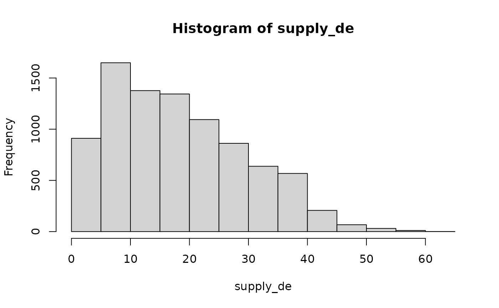
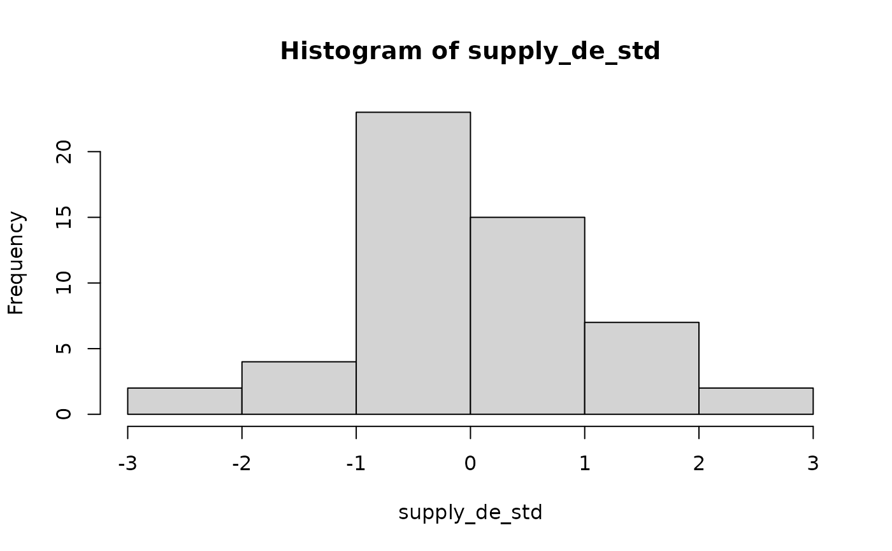
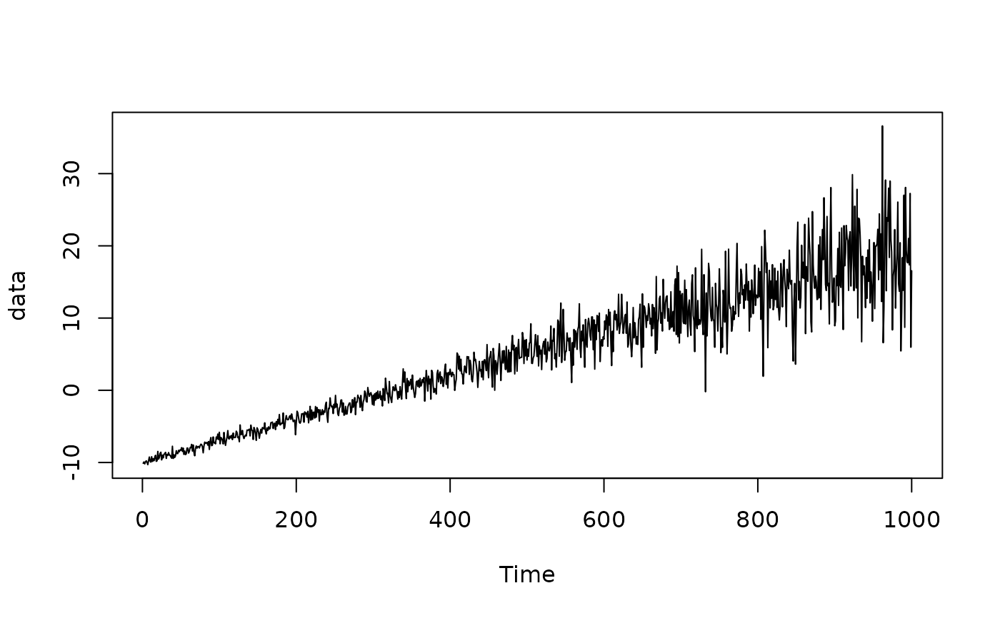
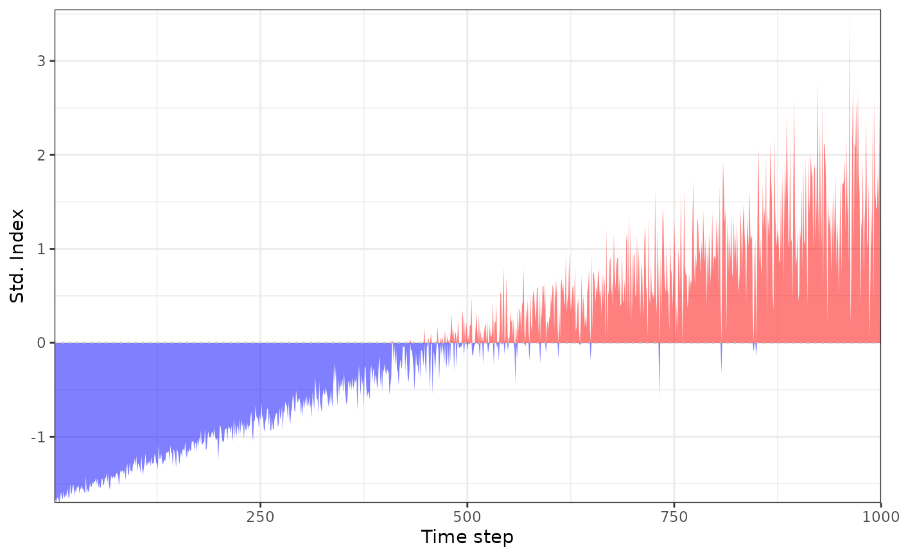
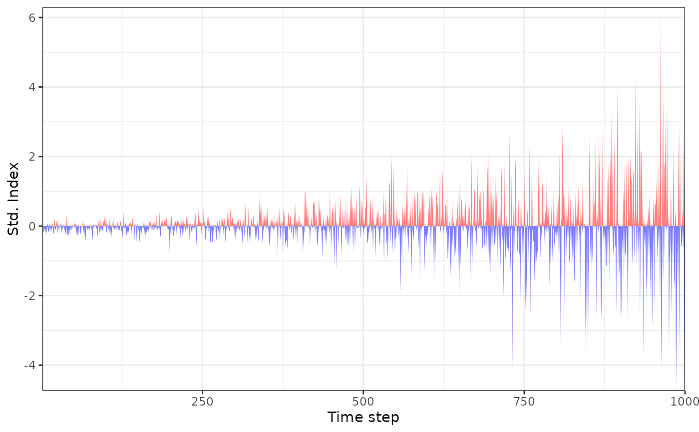
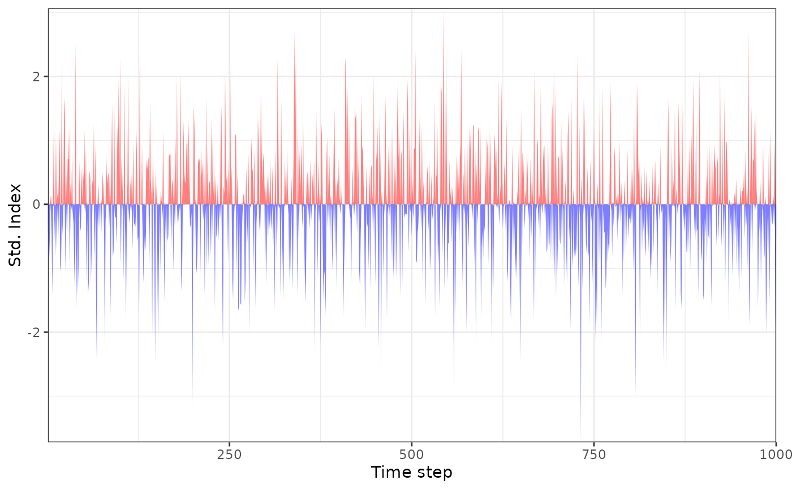

Inputs a time series of a chosen variable (e.g. precipitation, energy demand, residual load etc.) and returns a time series of standardised indices. Indices can be calculated on any timescale.
Usage
std_index(
x_new,
x_ref = x_new,
timescale = NULL,
dist = "empirical",
preds_new = NULL,
preds_ref = preds_new,
method = "mle",
return_fit = FALSE,
index_type = "normal",
gr_new = NULL,
gr_ref = gr_new,
moving_window = NULL,
window_scale = NULL,
agg_period = NULL,
agg_scale = NULL,
agg_fun = "sum",
rescale = NULL,
rescale_fun = "sum",
ignore_na = FALSE,
n_thres = 20,
na_thres = 10,
lower = -Inf,
upper = Inf,
cens = index_type,
...
)Arguments
- x_new
vector or time series to be converted to standardised indices.
- x_ref
vector or time series containing reference data to use when calculating the standardised indices.
- timescale
timescale of the data; one of
'mins','hours','days','weeks','months','years'.- dist
character string specifying the distribution to be fit to the data; one of
'empirical','kde','norm','lnorm','logis','llogis','exp','gamma', and'weibull'.- preds_new
data frame of predictor variables on which the estimated distribution should depend, corresponding to the new observations
x_new.- preds_ref
data frame of predictor variables on which the estimated distribution should depend, corresponding to the reference observations
x_ref.- method
A character string coding for the fitting method:
"mle"for 'maximum likelihood estimation',"mme"for 'moment matching estimation',"qme"for 'quantile matching estimation',"mge"for 'maximum goodness-of-fit estimation' and"mse"for 'maximum spacing estimation'.- return_fit
logical specifying whether to return parameters and goodness-of-fit statistics for the distribution fit.
- index_type
the type of standardised index:
"normal"(default),"prob01", or"prob11"(see details).- gr_new
vector of factors for which separate distributions should be applied to
x_new.- gr_ref
vector of factors for which separate distributions should be fit to
x_ref.- moving_window
length of moving window on which to calculate the indices.
- window_scale
timescale of
moving_window; default is the timescale of the data.- agg_period
length of the aggregation period.
- agg_scale
timescale of
agg_period; one of'mins','hours','days','weeks','months','years'.- agg_fun
string specifying the function used to aggregate the data over the aggregation period, default is
'sum'.- rescale
the timescale that the time series should be rescaled to; one of
"days","weeks","months","quarters", and"years".- rescale_fun
string specifying the function used to rescale the data; default is
"sum".- ignore_na
logical specifying whether to ignore NAs when rescaling the time series.
- n_thres
minimum number of data points required to estimate the distribution; default is 10.
- na_thres
threshold for the percentage of NA values allowed in the aggregation period; default is 10%.
- lower, upper
numeric values specifying the lower and upper bounds at which the values in
x_refandx_neware censored.- cens
method used to deal with censoring of the PIT values; either a string (
'normal'or'prob'), corresponding to common choices, or a custom numeric value.- ...
Value
Time series of standardised indices. If return_fit = TRUE, then a list is returned
that contains the time series of standardised indices, as well as information about the
fit of the distribution to the data. If gr_new is specified, then std_index
returns a list of time series of standardised indices, with an element corresponding to
each factor in gr_new.
Details
Standardised indices
Standardised indices are calculated by estimating the cumulative distribution function (CDF)
of the variable of interest, and using this to transform the measurements to
a standardised scale. std_index is a wrapper for get_pit and
fit_dist that additionally allows for aggregation, rescaling, and grouping
of the time series. Further details can be found in the help pages of get_pit
and fit_dist.
std_index estimates the CDF using a time series of reference data x_ref,
and applies the resulting transformation to the time series x_new. The result is
a time series of standardised x_new values. These standardised indices quantify
how extreme the x_new values are in reference to x_ref.
x_new and x_ref should therefore contain values of the same variable.
If x_ref is not specified, then it is set equal to x_new, so that the
standardised indices are calculated in-sample.
The function returns a vector or time series (depending on the format of x_new)
containing the standardised indices corresponding to x_new. Three different
types of indices are available, which are explained in detail in the vignette.
The index type can be chosen using index_type, which must be one of
"normal" (default), "prob01", and "prob11".
Time series manipulations
x_new and x_ref can either be provided as vectors or xts time series.
In the latter case, the time series can be aggregated across timescales or rescaled.
This is useful, for example, if x_new contains hourly data, but interest is
on daily accumulations or averages of the hourly data.
The argument rescale converts the data to a different timescale. The original
timescale of the data can be manually specified using the argument timescale.
timescale is required if the time series is to be aggregated or rescaled.
Otherwise, std_index will try to automatically determine the timescale of the data.
Manually specifying the timescale of the data is generally more robust. The rescaling
is performed using the function rescale_fun. By default,
rescale_fun = "sum", so that values are added across the timescale of interest.
This can be changed to any user-specified function.
The argument agg_period aggregates the data across the timescale of interest.
The aggregation is performed using aggregate_xts.
This differs from rescale in that the resolution of the data remains the same.
agg_period is a number specifying how long the data should be aggregated across.
By default, it is assumed that agg_period is on the same timescale as x_new
and x_ref. For example, if the data is hourly and agg_period = 24, then
this assumes the data is to be aggregated over the past 24 hours. The scale of the
aggregation period can also be specified manually using agg_scale. For example,
specifying agg_period = 1 and agg_scale = "days"
would also aggregate the data over the past day. agg_fun specifies how the
data is to be aggregated, the default is agg_fun = "sum".
Distribution estimation
dist is the distribution used to estimate the CDF from x_ref.
Currently, functionality is available to fit one of the following distributions to the data:
Normal ("norm"), Log-normal ("lnorm"), Logistic ("logis"),
Log-logistic ("llogis"), Exponential ("exp"), Gamma ("gamma"),
and Weibull ("weibull").
Alternatively, the CDF can be estimated empirically (dist = "empirical")
based on the values in x_ref, or using kernel density estimation (dist = "kde").
If dist is a parametric family of distributions, then parameters of the
distribution are estimated from x_ref. method specifies how the parameters
are estimated; see fit_dist for details.
The resulting parameters and corresponding goodness-of-fit statistics can be
returned by specifying return_fit = TRUE.
By default, the distribution is estimated over all values in x_ref. Alternatively,
if x_new is an xts object, parameters can be estimated sequentially using a
moving window of values. moving_window determines the length of the moving window.
This is a single value, assumed to be on the same timescale as x_new.
The timsscale of the moving window can also be specified manually using window_scale.
window_scale must also be one of "days", "weeks", "months",
"quarters", and "years".
The estimated distribution can also be non-stationary, by depending on some predictors
or covariates. These predictors can be stored in data frames and input to std_index
via the arguments preds_new and preds_ref; see fit_dist for
details. Predictors cannot be used if the data is to be rescaled, since this would also
require rescaling the predictors; in this case, an error is returned.
Grouping
By default, one distribution is fit to all values in x_ref. Separate distributions
can be fit to different subsets of the data by specifying gr_ref and gr_new.
These should be factor vectors, where each factor corresponds to a different grouping or
subset of the data.
No factor should appear in gr_new that does not appear in gr_ref, since
there would be no data from which to estimate the distribution for this group. An error
is returned in this case.
Since the distribution of the values in x_ref could change for different groupings,
the argument dist can be a vector of strings of the same length as the number of
factor levels in gr_new. In this case, the first element of dist
should correspond to the first element of levels(gr_new) and so on.
If dist is a single string, then the same distribution is used for each grouping.
References
McKee, T. B., Doesken, N. J., & Kleist, J. (1993): `The relationship of drought frequency and duration to time scales', In Proceedings of the 8th Conference on Applied Climatology 17, 179-183.
Vicente-Serrano, S. M., Beguería, S., & López-Moreno, J. I. (2010): `A multiscalar drought index sensitive to global warming: the standardized precipitation evapotranspiration index', Journal of Climate 23, 1696-1718. https://doi.org/10.1175/2009JCLI2909.1
Allen, S. & N. Otero (2023): `Standardised indices to monitor energy droughts', Renewable Energy 217, 119206. https://doi.org/10.1016/j.renene.2023.119206
Examples
data(data_supply)
# consider hourly German energy supply data in 2019
supply_de <- subset(data_supply, country == "Germany", select = c("date", "PWS"))
supply_de <- xts::xts(supply_de$PWS, order.by = supply_de$date)
#options(xts_check_TZ = FALSE)
# convert to hourly standardised indices
supply_de_std <- std_index(supply_de, timescale = "hours")
hist(supply_de, main = "Raw values")
hist(supply_de_std, main = "Standardised values")
# convert to daily or weekly standardised indices
supply_de_std <- std_index(supply_de, timescale = "hours", rescale = "days")
# convert to weekly standardised indices calculated on each day
supply_de_std <- std_index(supply_de, timescale = "hours", rescale = "days",
agg_period = 1, agg_scale = "weeks")
# calculate standardised indices corresponding to December, based on the previous year
dec <- zoo::index(supply_de) > "2019-12-01 UTC"
supply_de_std_dec <- std_index(x_new = supply_de[dec], x_ref = supply_de[!dec],
timescale = "hours")
# calculate standardised indices using a 100 day moving window
supply_de_std_dec <- std_index(supply_de[dec], supply_de, timescale = "hours",
rescale = "days", moving_window = 100)
# suppose we are interested in the daily maximum rather than the daily total
supply_de_std <- std_index(supply_de, timescale = "hours", rescale = "days",
rescale_fun = "max")
supply_de_std <- std_index(supply_de, timescale = "hours", rescale = "days",
rescale_fun = "mean") # or average
# the default uses the empirical distribution, but this requires more data than
# parametric distributions, meaning it is not ideal when data is short, e.g. in weekly case
supply_de_std <- std_index(supply_de, timescale = "hours", rescale = "weeks") # warning
#> Warning: using the empirical distribution is only recommended when at least
#> 100 values are available when fitting the distribution
# instead, we can use a parametric distribution, e.g. a gamma distribution
supply_de_std <- std_index(supply_de, timescale = "hours", rescale = "weeks", dist = "gamma")
# we can check the fit by checking whether the indices resemble a standard normal distribution
hist(supply_de)

hist(supply_de_std)

# we can also look at the properties of the fit
supply_de_std <- std_index(supply_de, timescale = "hours", rescale = "weeks",
dist = "gamma", return_fit = TRUE)
# we could also use kernel density estimation, which is a flexible compromise between the two
supply_de_std <- std_index(supply_de, timescale = "hours", rescale = "weeks", dist = "kde")
# calculate separate indices for each quarter of 2019
season <- ceiling(lubridate::month(zoo::index(supply_de)) / 3)
season <- factor(c("Q1", "Q2", "Q3", "Q4")[season])
supply_de_std <- std_index(supply_de, timescale = "hours", rescale = "days",
gr_new = season, dist = "kde", return_fit = TRUE)
# non-stationary distribution estimation using gamlss
N <- 1000
x <- seq(-10, 20, length.out = N)
data <- rnorm(N, x, exp(x/10)) # non-stationary mean and standard deviation
plot(data)

preds <- data.frame(t = x)
# standardised indices without trend
si_st <- std_index(data, dist = "norm")
plot.ts(si_st)

# standardised indices with trend in mean
si_nst <- std_index(data, dist = "norm", preds_new = preds)
#> GAMLSS-RS iteration 1: Global Deviance = 5073.898
#> GAMLSS-RS iteration 2: Global Deviance = 5073.898
plot.ts(si_nst)

# standardised indices with trend in mean and sd
si_nst2 <- std_index(data, dist = "norm", preds_new = preds, sigma.formula = ~ .)
#> GAMLSS-RS iteration 1: Global Deviance = 3885.226
#> GAMLSS-RS iteration 2: Global Deviance = 3883.514
#> GAMLSS-RS iteration 3: Global Deviance = 3883.514
plot.ts(si_nst2)
